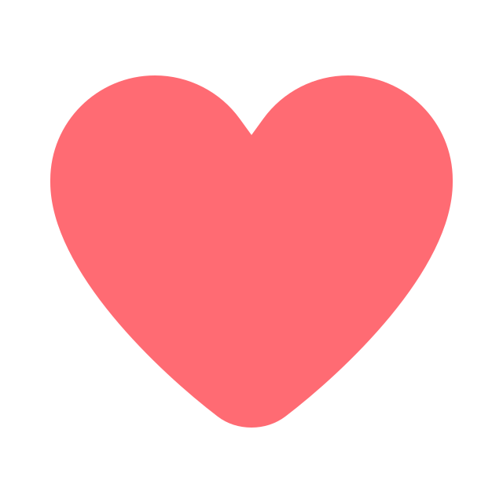

Welcome to Love Club
Our
Next
Chapter
- Home
- About
- Service
- Contact

Welcome to Love Club
Our
Next
Chapter
Sekarang, aku dateng bukan buat maksa kamw balik, bukan juga buat nyalahin siapa pun. Aku cuma pengen ngomong dari lubuk hatiku yang paling dalem, dengan versi diriku yang mungkin udah berubah. Aku tau, dulu aku banyak banget salah. Aku terlalu ngekang kamw, terlalu takut kehilangan, sampe lupa kalo yang namanya cinta juga butuh ruang buat bernafas. Aku nyesel banget, karena tanpa sadar aku bikin kamw ngerasa capek sama segala sikapku. Padahal yang aku mau cuma pengen kamw tetep di sampingku. Aku juga sadar, aku dulu gampang emosi, sering gak bisa nerima sisi lucu dan childish kamw padahal itu justru yang bikin kamw beda dari yang lain. Dan tanpa kamw sadari, aku juga orangnya moody banget, bahkan kadang lebih parah dari kamw. Kadang aku denger cerita kamw, tapi seolah-olah aku nggak bener-bener hadir di cerita itu. Dan itu salah satu hal yang paling aku sesalin sekarang.
Aku nggak nyalahin kamw kok kalo akhirnya kamw lebih nyaman sama dirimu yang sekarang (single era's) or maybe choose the another man. Aku ngerti kok, setelah semua yang terjadi, kamw butuh tenang, butuh bebas, butuh nemuin lagi versi dirimu tanpa pressure dari siapa pun termasuk aku. Tapi aku juga pengen kamw tau, aku bener-bener belajar banyak dari semua yang udah pernah terjadi. Aku pelan-pelan belajar buat jadi cowok yang gak ngatur, gak maksa, yang tau kapan harus diem, dan kapan cukup bilang “semangat ya” tanpa nuntut kabar balik. Aku gatau kamw bakal ngerasa apa pas baca ini. Aku cuma pengen kamw tau satu hal: aku masih sayang, dan kali ini aku pengen jaga kamw dengan cara yang bener. Bukan lagi dengan mengekang, tapi dengan ngasih ruang. Semoga dengan waktu yang udah aku kasih ke kamw selama masa putus ini, udah kamw pake buat mikir gimana berikutnya. Dan semoga selama ini kamw udah mikir secara matang, mau dilanjutin atau nggak. Bukan lagi karena takut kehilangan, tapi karena aku pengen kamw ngerasa tenang dan aman di sisiku.
Aku gatau apakah kamw bakal mau ngasih aku kesempatan lagi buat buktiin kalo aku udah berubah. Aku ngerti, kamw mungkin masih butuh waktu, proses, dan jarak juga. Aku siap nunggu, sebenernya aku udah siap nunggu dari dulu. Aku cuma pengen kamw tau, kalo suatu saat nanti kamw ngerasa siap, aku bakal tetep di sini, dengan versi diriku yang lebih baik, yang lebih ngerti kamw, dan yang lebih bisa ngejaga perasaan kamw. Aku harap kamw bisa baca surat ini dengan hati yang terbuka. Aku harap kamw bisa ngerasa kalo aku bener-bener pengen jadi bagian dari hidup kamw lagi, tapi kali ini dengan cara yang lebih dewasa dan penuh pengertian. Dan kalau boleh jujur… apakah sekarang aku bisa mendapatkan “a bit chances” itu? Kesempatan kecil itu? (cukup dijawab dalam hati aja kok).
Aku janji, kali ini aku bakal jadi tempat yang tenang bukan kurungan buat kamw. Dan kalo pun semua yang pernah terjadi harus jadi pelajaran, aku tetep bersyukur pernah punya kamw. Karena dari kamw, aku belajar arti sabar, kehilangan, dan gimana caranya mencintai tanpa memberikan pressure. Sekarang, di akhir tahun ini, aku gak mau cuma bilang aku berubah aku mau buktiin kalo aku bener-bener udah jadi versi yang lebih baik.
- Wedha, terima kasih sudah mau baca surat ini sampe habis. Semoga kamw selalu bahagia, apapun yang terjadi nanti. -